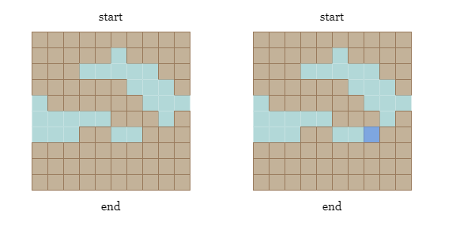
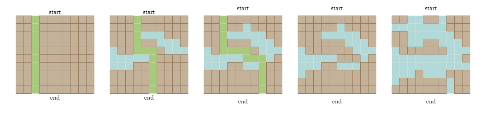

As shown in the picture below, we could find a path that connects the start (the top row) and the end
(the bottom row) in the left grid. However, if the land cell colored in dark blue is covered by water, we won't be
able to reach end from start by only walking on land cells.

If you are not familiar with breadth-first search (BFS), you can refer to our Breadth-First Search Explore Card
Breadth-First Search (BFS) is a graph traversal algorithm that explores all the nodes in a graph that can be reached from a given starting node. It starts by visiting the starting node, and then visits all the nodes at a distance of one from the starting node, then all the nodes at a distance of two, and so on. This method is usually implemented using a queue data structure, where the starting node is inserted into the queue and then removed, and its neighbors are inserted into the queue, and so on.
Now back to our problem, we split it into two parts:
Given a graph, how do we determine if there is a pathway.
As the water covers one more cell each day, how do we determine which day is the last day that a pathway exists?
To check if there is a path, we can start a BFS traversal from all land cells in the top row of the graph, and check if any of the land cell in the bottom is visited. We will mark all the land cells in the top row as visited, then we move on to the neighbor cells in the four directions of these land cells.
We can use a queue data structure to keep track of the cells to be visited. Start by inserting all the land cells in the tow rop of the grid into the queue. Then, we repeat the following steps until the queue is empty:
Now move to the second subproblem: how to locate the last day that we can still cross?
One approach is to evaluate each day one by one, beginning from the first day, and verify if we can cross on day
i after the water covers cell cells[i]. However, this approach is inefficient because it
requires at most O(col×row)O(col\times row) BFS searches in the worst-case scenario.

Alternatively, we can use binary search to identify the last day on which we can still cross by observing the following property of the problem:
i, we can definitely cross on any day before i.i, we definitely cannot cross on any day after i.Let n be the total number of days, and we know that the last day is between 1 and
n, which is the maximum number of water cells that can be added to the map. Hence, our search space is
[left, right] = [1, n].
At each step, we compute the mid-day of our search space as mid = right - (right - left) / 2, and add
all water cells from cells[0 ~ mid] to the grid, we then perform a BFS over the modified grid to
determine if a pathway exists. If a path is present on day mid, we will move on to the half with larger
values, [mid, right], otherwise, we move on to the half with smaller values, [left, mid -
1].
Initialize the search space by setting the left boundary to left = 1 and the right boundary to
right = n.
Define canCross(row, col, cells, day) to check if we can still cross after day
days.
row * col.cells[:day] to 1.queue.queue is not empty, deque the first cell (cur_row, cur_col).
cur_row == row - 1, it means we have reached the bottom row, return
True.
-1, and add them into queue.
False.While left < right:
mid = right - (right - left) / 2.canCross(row, col, cells, mid) to check if there is a pathway.left = mid, otherwise, set right = mid - 1.Return left as the last day when we can still cross.
Java
class Solution {
private int[][] directions = new int[][]{{1, 0}, {-1, 0}, {0, 1}, {0, -1}};
public boolean canCross(int row, int col, int[][] cells, int day) {
int[][] grid = new int[row][col];
Queue queue = new LinkedList<>();
for (int i = 0; i < day; i++) {
grid[cells[i][0] - 1][cells[i][1] - 1] = 1;
}
for (int i = 0; i < col; i++) {
if (grid[0][i] == 0) {
queue.offer(new int[]{0, i});
grid[0][i] = -1;
}
}
while (!queue.isEmpty()) {
int[] cur = queue.poll();
int r = cur[0], c = cur[1];
if (r == row - 1) {
return true;
}
for (int[] dir : directions) {
int newRow = r + dir[0];
int newCol = c + dir[1];
if (newRow >= 0 && newRow < row && newCol >= 0 && newCol < col && grid[newRow][newCol] == 0) {
grid[newRow][newCol] = -1;
queue.offer(new int[]{newRow, newCol});
}
}
}
return false;
}
public int latestDayToCross(int row, int col, int[][] cells) {
int left = 1;
int right = row * col;
while (left < right) {
int mid = right - (right - left) / 2;
if (canCross(row, col, cells, mid)) {
left = mid;
} else {
right = mid - 1;
}
}
return left;
}
}
Python3
class Solution:
def canCross(self, row, col, cells, day):
grid = [[0] * col for _ in range(row)]
queue = collections.deque()
for r, c in cells[:day]:
grid[r - 1][c - 1] = 1
for i in range(col):
if not grid[0][i]:
queue.append((0, i))
grid[0][i] = -1
while queue:
r, c = queue.popleft()
if r == row - 1:
return True
for dr, dc in [(1, 0), (-1, 0), (0, 1), (0, -1)]:
new_row, new_col = r + dr, c + dc
if 0 <= new_row < row and 0 <= new_col < col and grid[new_row][new_col] == 0:
grid[new_row][new_col] = -1
queue.append((new_row, new_col))
return False
def latestDayToCross(self, row: int, col: int, cells: List[List[int]]) -> int:
left, right = 1, row * col
while left < right:
mid = right - (right - left) // 2
if self.canCross(row, col, cells, mid):
left = mid
else:
right = mid - 1
return left
Time complexity: O(row⋅col⋅log(row⋅col))O(\text{row} \cdot \text{col} \cdot\log (\text{row} \cdot \text{col}))
The binary search over a search space of size nn takes O(logn)O(\log n) steps to find the last day that we can still cross. The size of our search space is row⋅col\text{row} \cdot \text{col}.
At each step, we need to BFS over the modified grid, which takes O(row⋅col)O(\text{row} \cdot \text{col}).
Space complexity: O(row⋅col)O(\text{row} \cdot \text{col})
queue.
If you are not familiar with depth-first search (DFS), you can refer to our Depth-First Search Explore Card
In the previous apprrach, we BFS over the grid to find if there is a pathway, this process can also be implemented with DFS, which is another graph traversal algorithm used to explore or search all the cells of a grid. We will start at a land cell in the top row and explore as far as possible along each path before backtracking.
We will visit an unvisited land cell, and then recursively visit all its adjacent land neighbors. This process continues until all reachable land cells in the grid have been visited or until we reach the bottom row.
To try all pathways, we must start DFS on each land cell in the top row of the grid. We can change the value of
already visited cells to -1 to avoid repeated visits to the same cell.
Initialize the search space by setting the left boundary to left = 1 and the right boundary to
right = n.
Define canCross(row, col, cells, day) to check if we can still cross after day
days.
row * col.cells[:day] to 1.(0, c), start DFS from this cell to explore
its unvisited land neighbors recursively. If we reach any cell in the last row, then return
true.
false.While the left < right:
mid = right - (right - left) / 2.mid days.left = mid, otherwise, set right = mid - 1.Return left as the last day when we can still cross.
Java
class Solution {
private int[][] directions = new int[][]{{1, 0}, {-1, 0}, {0, 1}, {0, -1}};
public boolean canCross(int row, int col, int[][] cells, int day) {
int[][] grid = new int[row][col];
for (int i = 0; i < day; ++i) {
int r = cells[i][0] - 1, c = cells[i][1] - 1;
grid[r][c] = 1;
}
for (int i = 0; i < day; ++i) {
grid[cells[i][0] - 1][cells[i][1] - 1] = 1;
}
for (int i = 0; i < col; ++i) {
if (grid[0][i] == 0 && dfs(grid, 0, i, row, col)) {
return true;
}
}
return false;
}
private boolean dfs(int[][] grid, int r, int c, int row, int col) {
if (r < 0 || r >= row || c < 0 || c >= col || grid[r][c] != 0) {
return false;
}
if (r == row - 1) {
return true;
}
grid[r][c] = -1;
for (int[] dir : directions) {
int newR = r + dir[0], newC = c + dir[1];
if (dfs(grid, newR, newC, row, col)) {
return true;
}
}
return false;
}
public int latestDayToCross(int row, int col, int[][] cells) {
int left = 1, right = row * col;
while (left < right) {
int mid = right - (right - left) / 2;
if (canCross(row, col, cells, mid)) {
left = mid;
} else {
right = mid - 1;
}
}
return left;
}
}
Python3
class Solution:
def canCross(self, row, col, cells, day):
grid = [[0] * col for _ in range(row)]
for r, c in cells[:day]:
grid[r - 1][c - 1] = 1
def dfs(r, c):
if r < 0 or r >= row or c < 0 or c >= col or grid[r][c] != 0:
return False
if r == row - 1:
return True
grid[r][c] = -1
for dr, dc in [(1, 0), (-1, 0), (0, 1), (0, -1)]:
if dfs(r + dr, c + dc):
return True
return False
for i in range(col):
if grid[0][i] == 0 and dfs(0, i):
return True
return False
def latestDayToCross(self, row: int, col: int, cells: List[List[int]]) -> int:
left, right = 1, row * col
while left < right:
mid = right - (right - left) // 2
if self.canCross(row, col, cells, mid):
left = mid
else:
right = mid - 1
return left
Time complexity: O(row⋅col⋅logrow⋅col)O(\text{row} \cdot \text{col} \cdot\log \text{row} \cdot \text{col})
The binary search over a search space of size nn takes O(logn)O(\log n) steps to find the last day that we can still cross. The size of our search space is row⋅col\text{row} \cdot \text{col}.
The DFS method visits each cell at most once, which takes O(row⋅col)O(\text{row} \cdot \text{col}) time.
Space complexity: O(row⋅col)O(\text{row} \cdot \text{col})
If you are not familiar with disjoint set union (DSU), you can refer to our Disjoint Set Explore Card. We will not talk about implementation details in this article, but only about the interface to the data structure.
A disjoint-set data structure, also called a union–find data structure or merge–find set, is a data structure that stores a collection of disjoint (non-overlapping) sets. Equivalently, it stores a partition of a set into disjoint subsets. It provides operations for adding new sets, merging sets (replacing them by their union), and finding a representative member of a set. It implements two useful operations:
Find: Determine which subset a particular element is in. This can be used to determine if two
elements are in the same subset.
Union: Join two subsets into a single subset.We need to reverse the days cells, which equals replacing water cells with land cells. This is necessary
because we are searching for the last day when there is a path, which is the same as the first day in reversed
order. During the union-find process, will we traverse through cells in reverse and replace the
corresponding water cell cells[i] by land cell. For each newly added land cell, we connect it with all
of its neighboring land cells. We repeat this process until either the first row and the last row are connected or
the traversal is complete.
Considering that the top row may contain multiple disconnected cells (As shown on the left picture below, the group
1,2and3contain cells in the top row, but they are not connected), how can we efficiently check whether a cell in the top row is connected to a cell in the bottom row? Do we need to check them one by one?
The answer is no, we just need two additional nodes in dsu (say top and bottom)
that represent all land cells in the top row and all land cells in the bottom row, respectively.
During the iteration, for each water cell cells[i] that will be replaced by land, in addition to
connecting it with its land neighbors, we will also:
top if it is in the first row.bottom if it is in the last row.Therefore, we can simply check if the first row is connected with the bottom row after this day, by checking if
top and bottom are connected.
You can refer to the following figure:
Create a disjoint set data structure dsu with a size of row * col + 2.
Create an all-one grid of size row * col representing the water cells after the
last day.
Iterate over reversed cells, for each cell cells[i] = (r, c):
Check its neighbors in all four directions, and if there is a land cell (new_r, new_c),
we connect the root of cells[i] to the root of this neighbor in dsu.
If r = 0, connect it with top.
If r = row - 1, connect it with bottom.
Check if top and bottom are connected, and return i if they
are.
Java
class DSU {
int[] root, size;
public DSU(int n) {
root = new int[n];
for (int i = 0; i < n; i++) {
root[i] = i;
}
size = new int[n];
Arrays.fill(size, 1);
}
public int find(int x) {
if (root[x] != x) {
root[x] = find(root[x]);
}
return root[x];
}
public void union(int x, int y) {
int rootX = find(x);
int rootY = find(y);
if (rootX == rootY) {
return;
}
if (size[rootX] > size[rootY]) {
int tmp = rootX;
rootX = rootY;
rootY = tmp;
}
root[rootX] = rootY;
size[rootY] += size[rootX];
}
}
class Solution {
public int latestDayToCross(int row, int col, int[][] cells) {
DSU dsu = new DSU(row * col + 2);
int[][] grid = new int[row][col];
int[][] directions = {{0, 1}, {0, -1}, {1, 0}, {-1, 0}};
for (int i = cells.length - 1; i >= 0; i--) {
int r = cells[i][0] - 1, c = cells[i][1] - 1;
grid[r][c] = 1;
int index1 = r * col + c + 1;
for (int[] d : directions) {
int newR = r + d[0], newC = c + d[1];
int index2 = newR * col + newC + 1;
if (newR >= 0 && newR < row && newC >= 0 && newC < col && grid[newR][newC] == 1) {
dsu.union(index1, index2);
}
}
if (r == 0) {
dsu.union(0, index1);
}
if (r == row - 1) {
dsu.union(row * col + 1, index1);
}
if (dsu.find(0) == dsu.find(row * col + 1)) {
return i;
}
}
return -1;
}
}
Python3
class DSU:
def __init__(self, n):
self.root = list(range(n))
self.size = [1] * n
def find(self, x):
if self.root[x] != x:
self.root[x] = self.find(self.root[x])
return self.root[x]
def union(self, x, y):
root_x = self.find(x)
root_y = self.find(y)
if root_x == root_y:
return
if self.size[root_x] > self.size[root_y]:
root_x, root_y = root_y, root_x
self.root[root_x] = root_y
self.size[root_y] += self.size[root_x]
class Solution:
def latestDayToCross(self, row: int, col: int, cells: List[List[int]]) -> int:
dsu = DSU(row * col + 2)
grid = [[1] * col for _ in range(row)]
directions = [(0, 1), (0, -1), (1, 0), (-1, 0)]
for i in range(len(cells) - 1, -1, -1):
r, c = cells[i][0] - 1, cells[i][1] - 1
grid[r][c] = 0
index_1 = r * col + c + 1
for dr, dc in directions:
new_r, new_c = r + dr, c + dc
index_2 = new_r * col + new_c + 1
if 0 <= new_r < row and 0 <= new_c < col and grid[new_r][new_c] == 0:
dsu.union(index_1, index_2)
if r == 0:
dsu.union(0, index_1)
if r == row - 1:
dsu.union(row * col + 1, index_1)
if dsu.find(0) == dsu.find(row * col + 1):
return i
Time complexity: O(row⋅col)O(\text{row} \cdot \text{col})
For TT operations, the amortized time complexity of the union-find algorithm (using path compression with union by rank) is O(alpha(T))O(alpha(T)). Here, α(T)\alpha(T) is the inverse Ackermann function that grows so slowly, that it doesn't exceed 44 for all reasonable TT (approximately T<10600 T < 10^{600}). You can read more about the complexity of union-find here. Because the function grows so slowly, we consider it to be O(1)O(1).
We iterate over the reversed cells and perform union and find
operations on cells of number (row⋅col)(\text{row} \cdot \text{col}), we consider the time complexity to be
O(row⋅col)O(\text{row} \cdot \text{col}).
Space complexity: O(row⋅col)O(\text{row} \cdot \text{col})
We use two arrays of size row⋅col+2\text{row} \cdot \text{col} + 2 to save the root and rank of each cell in the disjoint set data structure.
We also create an array of size row×col\text{row} \times \text{col} to represent each cell.
In contrast to the previous method of connecting the land cells in a reversed time, we now aim to connect water cells instead.
If we find a water pathway that connects the leftmost and rightmost columns on a particular day i, it
implies that there is no land pathway that connects the top and bottom rows, which is the day we are looking for.
In short: the last day when a land pathway exists is right before the first day when a water pathway exists.
To achieve this, we use the disjoint set union method similar to before, with a few minor differences:
left and right, so we need two
additional nodes in dsu (say left and right) that represent all water
cells in the leftmost column and all water cells in the rightmost column, respectively. By checking if left
and right are connected, we can verify the existence of a valid waterway.
Create a disjoint set union data structure dsu with a size of row * col + 2.
Create an all-zero grid of size row * col representing the land cells on the first
day.
Iterate over cells, for each water cell cells[i] on day i:
(new_r,
new_c), we connect the root of cells[i] to the root of this neighbor in
dsu.
c = 0, connect it with left.c = col - 1, connect it with right.left and right are connected, and return i if they are.
Java
class DSU {
int[] root, size;
public DSU(int n) {
root = new int[n];
for (int i = 0; i < n; i++) {
root[i] = i;
}
size = new int[n];
Arrays.fill(size, 1);
}
public int find(int x) {
if (root[x] != x) {
root[x] = find(root[x]);
}
return root[x];
}
public void union(int x, int y) {
int rootX = find(x);
int rootY = find(y);
if (rootX == rootY) {
return;
}
if (size[rootX] > size[rootY]) {
int tmp = rootX;
rootX = rootY;
rootY = tmp;
}
root[rootX] = rootY;
size[rootY] += size[rootX];
}
}
class Solution {
public int latestDayToCross(int row, int col, int[][] cells) {
DSU dsu = new DSU(row * col + 2);
int[][] grid = new int[row][col];
int[][] directions = {{0, 1}, {0, -1}, {1, 0}, {-1, 0}, {1, 1}, {1, -1}, {-1, 1}, {-1, -1}};
for (int i = 0; i < row * col; ++i) {
int r = cells[i][0] - 1, c = cells[i][1] - 1;
grid[r][c] = 1;
int index1 = r * col + c + 1;
for (int[] d : directions) {
int newR = r + d[0], newC = c + d[1];
int index2 = newR * col + newC + 1;
if (newR >= 0 && newR < row && newC >= 0 && newC < col && grid[newR][newC] == 1) {
dsu.union(index1, index2);
}
}
if (c == 0) {
dsu.union(0, index1);
}
if (c == col - 1) {
dsu.union(row * col + 1, index1);
}
if (dsu.find(0) == dsu.find(row * col + 1)) {
return i;
}
}
return -1;
}
}
Python3
class DSU:
def __init__(self, n):
self.root = list(range(n))
self.size = [1] * n
def find(self, x):
if self.root[x] != x:
self.root[x] = self.find(self.root[x])
return self.root[x]
def union(self, x, y):
root_x = self.find(x)
root_y = self.find(y)
if root_x == root_y:
return
if self.size[root_x] > self.size[root_y]:
root_x, root_y = root_y, root_x
self.root[root_x] = root_y
self.size[root_y] += self.size[root_x]
class Solution:
def latestDayToCross(self, row: int, col: int, cells: List[List[int]]) -> int:
dsu = DSU(row * col + 2)
grid = [[0] * col for _ in range(row)]
directions = [(0, 1), (0, -1), (1, 0), (-1, 0), (1, 1), (1, -1), (-1, 1), (-1, -1)]
for i in range(row * col):
r, c = cells[i][0] - 1, cells[i][1] - 1
grid[r][c] = 1
index_1 = r * col + c + 1
for dr, dc in directions:
new_r, new_c = r + dr, c + dc
index_2 = new_r * col + new_c + 1
if 0 <= new_r < row and 0 <= new_c < col and grid[new_r][new_c] == 1:
dsu.union(index_1, index_2)
if c == 0:
dsu.union(0, index_1)
if c == col - 1:
dsu.union(row * col + 1, index_1)
if dsu.find(0) == dsu.find(row * col + 1):
return i
Time complexity: O(row⋅col⋅α(row⋅col))O(\text{row} \cdot \text{col} \cdot \alpha(\text{row} \cdot \text{col}))
cells and perform union and find operations on
cells of number (row⋅col)(\text{row} \cdot \text{col}), we
consider the time complexity to be O(row⋅col)O(\text{row} \cdot \text{col}).
Space complexity: O(row⋅col)O(\text{row} \cdot \text{col})
We use two arrays of size row⋅col+2\text{row} \cdot \text{col} + 2 to save the root and rank of each cell in the disjoint set union data structure.
We also create an array of size row×col\text{row} \times \text{col} to represent each cell.